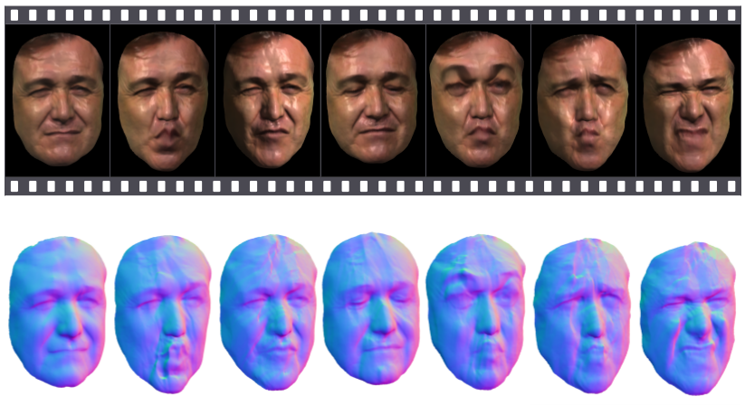

BMVC 2016 · Best Poster
Better Together: Joint Reasoning for Non-rigid 3D Reconstruction with Specularities and Shading

Abstract
In this paper, we demonstrate the use of shape-from-shading SfS to improve both the quality and the robustness of 3D reconstruction of dynamic objects captured by a single camera. Unlike previous approaches that made use of SfS as a post-processing step, we offer a principled integrated approach that solves dynamic object tracking and reconstruction and SfS as a single unified cost function. Moving beyond Lambertian SfS, we propose a general approach that models both specularities and shading while simultaneously tracking and reconstructing general dynamic objects. Solving these problems jointly prevents the kinds of tracking failures which can not be recovered from by pipeline approaches. We show state-of-the-art results both qualitatively and quantitatively.